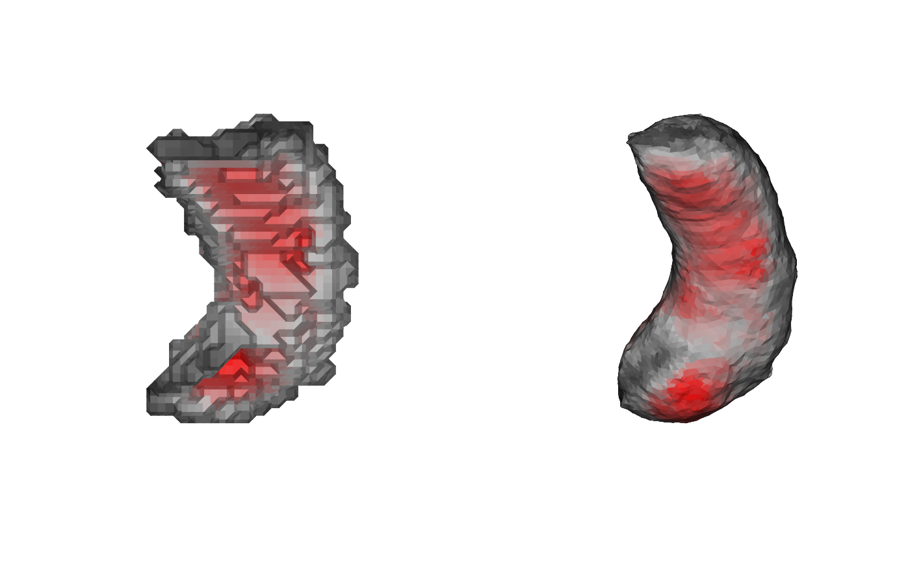

Iteratively relaxes a closed cortical-surface mesh into a smoother, more
compact "inflated" shape, while tracking how far each vertex moves inward
along the surface normal as it goes. Returns both the inflated mesh and
this per-vertex depth map (sulc).
Usage
mris_inflate(
mesh,
n_averages = 16L,
niterations = 10L,
l_spring_norm = 1,
l_dist = 0.1,
momentum = 0.9,
dt = 0.9,
desired_rms = 0.015,
scale_brain = TRUE,
verbose = FALSE
)Arguments
- mesh
triangular mesh of class
'mesh3d', typically a white-matter surface in millimeters. The mesh must be closed, manifold, and genus-0 (watertight, no boundary or non-manifold edges, single connected component) - this is a hard precondition of the underlying algorithm. An open or defective mesh (e.g. a raw surface extracted viavcg_isosurface, which often contains small extraction cracks) will silently inflate into a distorted, "sausage"-shaped result rather than a smooth sphere-like surface, andmris_inflatewill raise an error if such defects are detected.- n_averages
starting number of gradient-averaging passes (outer loop); halved each level down to 0. Default
16.- niterations
number of inner iterations per averaging level. Default
10.- l_spring_norm
normalized spring term coefficient. Default
1.0.- l_dist
distance-preservation coefficient (before per-level scaling). Default
0.1.- momentum
momentum coefficient. Default
0.9.- dt
time step. Default
0.9.- desired_rms
target
RMStangent-plane height for early stopping of each inner loop. Default0.015(mm).- scale_brain
logical; whether to scale the mesh to the canonical surface area (110,000 \(mm^2\)) before inflation. Set
FALSEonly for non-standard inputs. DefaultTRUE.- verbose
logical; print per-iteration progress. Default
FALSE.
Value
A named list:
meshInflated surface as a
'mesh3d'object withvb,it, andnormals.sulcNumeric vector of the per-vertex depth values described above (zero-mean, in mesh units).
Details
The implementation follows the inflation procedure described in the literature (see References):
Optionally rescale the mesh to a canonical surface area (110,000 \(mm^2\), the normalization target used by the reference procedure).
Outer loop: a neighborhood-averaging size
n_averagesis halved at each level (16, 8, ..., 0).Inner loop (
niterationsrepetitions per level):- Distance term
Restoring force pulling each vertex back towards its original distances to its neighbors, with coefficient
l_dist * sqrt(n_averages).- Gradient averaging
Smooth the distance-term gradient over
n_averagesneighborhood passes before adding the spring term.- Normalized spring term
Laplacian (neighbor-averaging) smoothing scaled by
sqrt(orig_area / current_area), with coefficientl_spring_norm; added after gradient averaging.- Momentum step
Update vertex positions using momentum integration with a 1 mm per-step displacement cap.
- Depth accumulation
Accumulate the normal-projected component of each step into the per-vertex depth map (
sulc).
Center the mesh, rescale it, and zero-mean the depth map (
sulc).
References
Cortical surface-based analysis II: Inflation, flattening, and a surface-based coordinate system. NeuroImage, 9(2), 195-207 (1999).
Examples
if (is_not_cran()) {
data("left_hippocampus_mask")
mesh <- vcg_isosurface(left_hippocampus_mask)
# Fix defects
mesh <- vcg_fix_defects(mesh, verbose = TRUE)
# Center the mesh
mesh$vb[1:3, ] <- mesh$vb[1:3, ] - rowMeans(mesh$vb[1:3, ])
# Inflate the surface while keeping the node distances
result <- mris_inflate(mesh, n_averages = 4L, niterations = 5L,
scale_brain = FALSE, verbose = TRUE)
# Visualize with the sulcal values
pal <- colorRampPalette(c("black", "gray", "red"))(128)
col <- pal[pmax(pmin(round(result$sulc * 10 + 64), 128), 1)]
oldpar <- par(mfrow = c(1, 2))
on.exit({ par(oldpar) })
plot(
mesh, col = col,
eye = c(0, 100, 0),
up = c(1, 0, 0))
plot(
result$mesh, col = col,
eye = c(0, 100, 0),
up = c(1, 0, 0))
}
#> vcgFixDefects: input nv=4318 nf=8652, boundary edges=40, non-manifold edges=0
#> vcgFixDefects: [1] removed degenerate/duplicate faces -> nv=4318 nf=8652
#> vcgFixDefects: [2] merged 0 close vertices -> nv=4318 nf=8652
#> vcgFixDefects: [3a] topology/normals ready, starting hole fill (max_hole_size=100)
#> vcgFixDefects: [3b] filled 10 hole(s) -> nv=4318 nf=8672
#> vcgFixDefects: [4] removed unreferenced vertices -> nv=4318 nf=8672
#> vcgFixDefects: [5a] topology rebuilt, orienting coherently
#> vcgFixDefects: [5b] oriented=1 orientable=1
#> vcgFixDefects: removed/merged 0 vertices (tol=9.97168e-05), filled 10 hole(s)
#> vcgFixDefects: output nv=4318 nf=8672, boundary edges=0, non-manifold edges=0, oriented=yes, orientable=yes, normals_flipped_outward=no
#> mris_inflate: building adjacency for 4318 vertices, 8672 faces
#> mris_inflate: computing original distances
#> mris_inflate: starting inflation, initial RMS=0.1937 (target=0.0150)
#> iter 5 (navg= 4, ldist=0.200): RMS=0.14109
#> iter 10 (navg= 2, ldist=0.141): RMS=0.10396
#> iter 15 (navg= 1, ldist=0.100): RMS=0.08010
#> iter 20 (navg= 0, ldist=0.000): RMS=0.06292
#> mris_inflate: done (20 total iterations)
